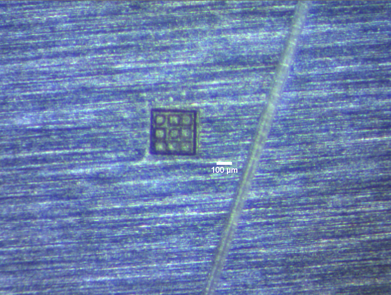
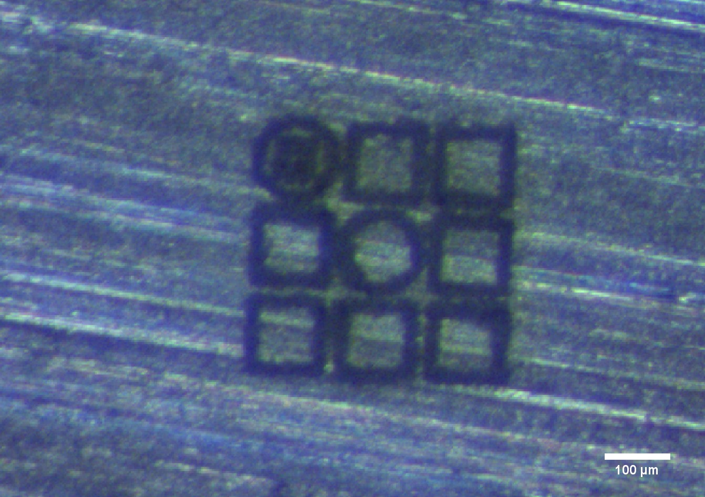
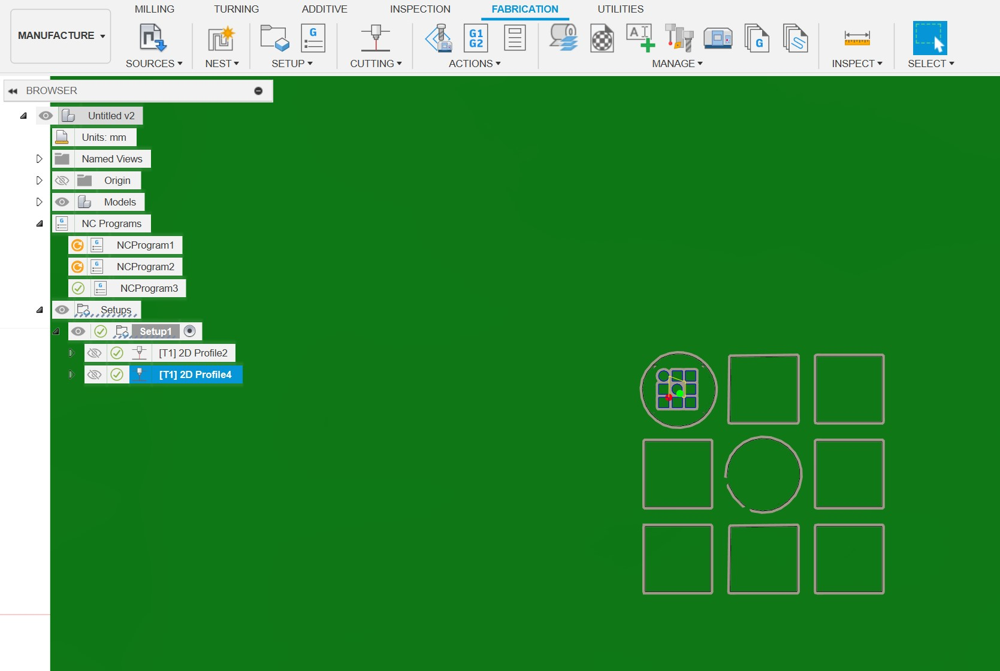
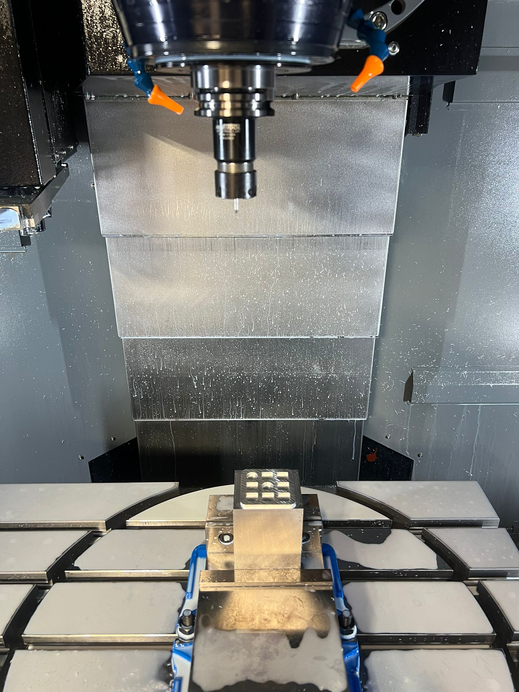
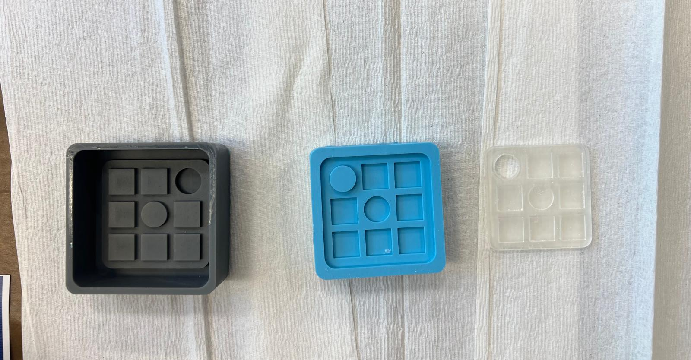

Lab machine guides · Micromachining · 5-axis CNC · Casting

Hello CBA is a practical guide to key fabrication machines at the MIT Center for Bits and Atoms — covering setup, operation, and workflows for micromachining, high-speed 5-axis milling, and molding and casting.
Using the Oxford Alpha532 Laser for fine-scale cutting and engraving. CAM toolpaths prepared in Fusion 360.


To start the Oxford laser:
Operations on the Hurco 5-axis CNC for complex geometries and high-speed milling.

Resin printing and casting workflows using the Formlabs Form 4.
